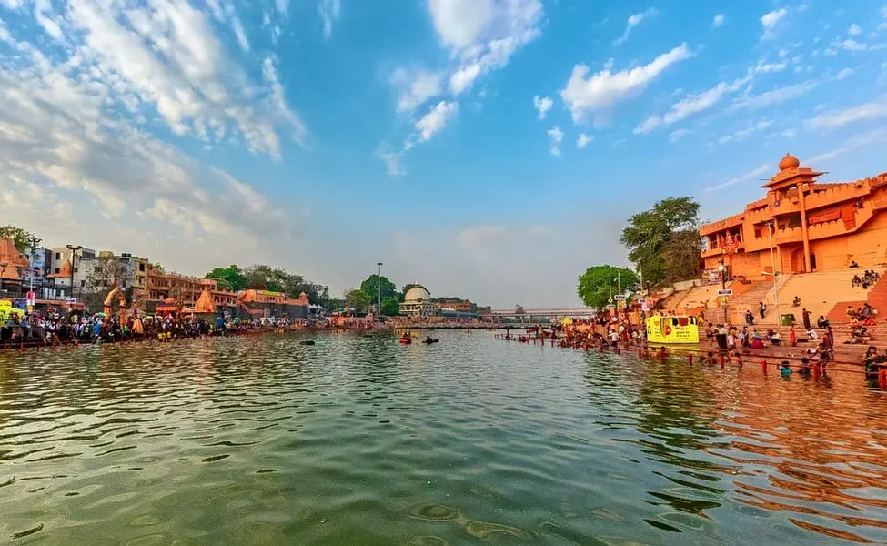

MADHYA PRADESH
Madhya Pradesh: A Cultural and Natural Paradise
Madhya Pradesh is a state in central India that boasts of rich cultural, natural, and historical attractions for tourists.
FAMOUS TOP 3 TOURIST PLACES TO VISIT IN MADHYA PRADESH
- OMKARESHWAR
- UJJAIN

- GWALIOR FORT
FAMOUS FOOD IN MADHYA PRADESH
- Poha:Poha has become a popular breakfast food in most of North and West India, but the Indori Poha is a class apart.
- Dal Bafl: Dal Bafla is Madhya Pradesh’s answer to Rajasthan’s widely popular Dal Bati Churma.
- Bhopali Gosht Korma: Owing to its long history of Mughal rulers, the influence of Mughlai cuisine in Madhya Pradeshi food is evident.